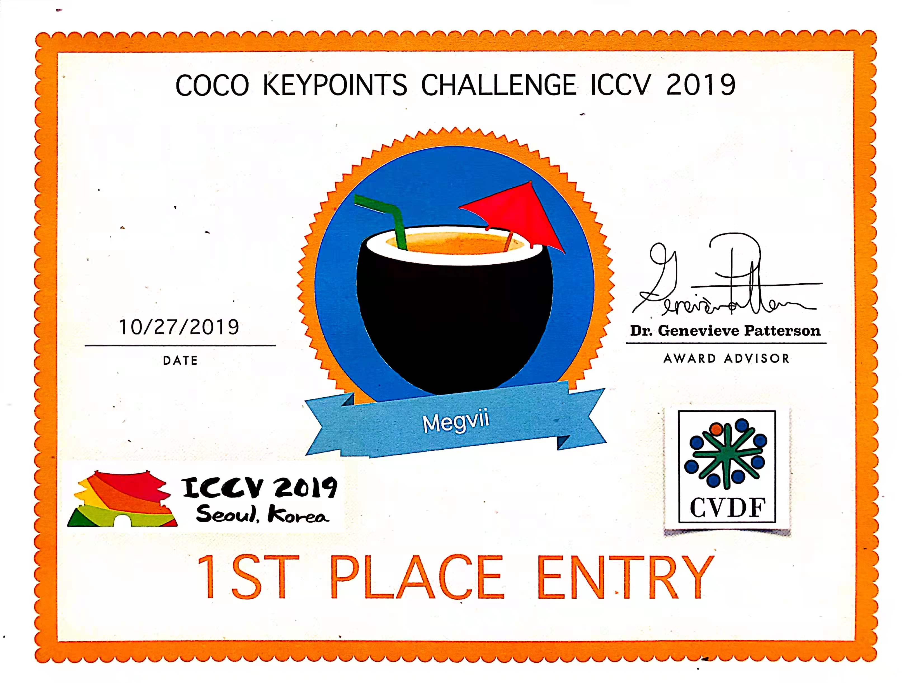
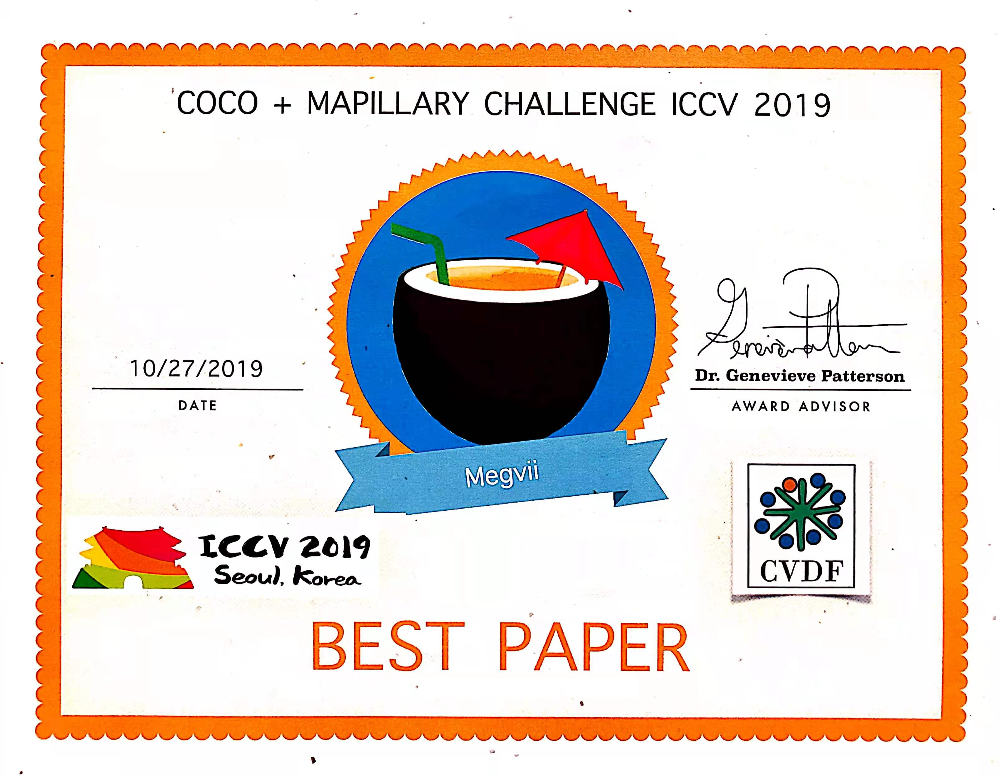

ECCV 2020 Spotlight
Residual Steps
Networks
Delicate local representations for multi-person pose estimation. The RSN + RTMPose-X release brings residual-step refinement and spatial attention to RTMPose-X.
Poses in motion
Each clip shows the released checkpoint using YOLOX-S person detections.
Learning Delicate Local Representations for Multi-Person Pose Estimation
Residual Steps Networks aggregate features of the same spatial resolution across residual steps. A pose refine machine uses channel and spatial cues to further refine the joint heatmaps.
The paper reports 78.6 AP on COCO test-dev for a single model and 93.0 PCKh on MPII.
Read the paper
RSN + RTMPose-X
The release adds a high-resolution RSN heatmap branch, pooled spatial attention and proposal-conditioned confidence. Training uses annotations from COCO train2017 and MPII.
Training recipe| Model | AP | Latency |
|---|---|---|
| Official RTMPose-X | 78.818237 | 3.338 ms |
| RSN + RTMPose-X | 79.124422 | 5.401 ms |
AP uses the full validation split, H56 person proposals, flip inference and OKS NMS. Latency measures one batch-1 pose forward on an RTX A5000 with fused FP16 CUDA Graph execution.
Benchmark detailsChallenge certificates





Citation
@inproceedings{cai2020learning,
title = {Learning Delicate Local Representations for Multi-Person Pose Estimation},
author = {Cai, Yuanhao and Wang, Zhicheng and Luo, Zhengxiong and Yin, Binyi
and Du, Angang and Wang, Haoqian and Zhang, Xiangyu and Zhou, Xinyu
and Zhou, Erjin and Sun, Jian},
booktitle = {European Conference on Computer Vision},
year = {2020}
}